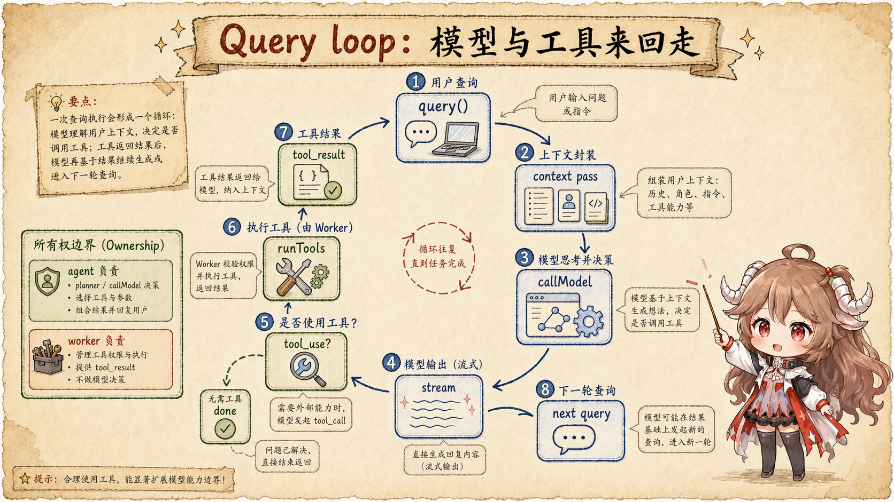
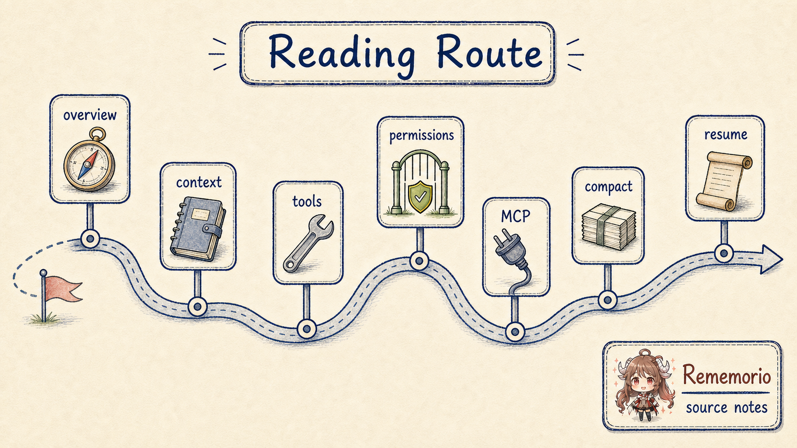

先把场景说小一点。你在项目里输入：“帮我修一下这个测试失败。”Claude Code 没有立刻把这句话原样扔给模型。
它先经过入口分流，进入交互界面；再和 slash command、本地命令、后台通知、权限请求一起排队；
然后 REPL 组装这一轮要用的系统提示词、用户记忆、仓库状态、工具上下文；最后才进入
query() 这条 agent loop。
所以第一篇不急着拆某个机制。我们先建立一张地图：一次任务到底穿过哪些关口， 每个关口守住什么边界，后续文章又应该从哪一层继续往下读。 只要这条主线清楚，后面看上下文、工具、权限、MCP、subagent、hooks、compact 和 resume，都不会迷路。
这篇的结论先放在前面：Claude Code 不是“一个大函数里问模型、执行工具、打印结果”。
它更像一条分层流水线：入口负责分流，队列负责排序，REPL 负责装配回合，query()
负责模型循环，工具层负责副作用关口，记录层负责让 UI、磁盘和恢复路径各自拿到该拿的事实。
证据边界也先说明。本文的源码依据来自 Rememorio/claude-code 公开镜像。 这个镜像不是 Anthropic 官方源码仓库，所以本文只把可见客户端代码写成直接事实； 产品概念和使用契约则参考 Claude Code 官方概览、 Claude Code memory 文档 和 Anthropic 的 tool use 文档。 遇到服务端内部行为、feature gate 背后的策略和 provider 实现，本文只描述客户端能看到的请求形状和状态边界。
这篇只回答五个问题：
- CLI 接到参数以后，哪些路径会提前返回，哪条才是普通交互主线？
- 为什么用户输入、slash command、后台通知和权限请求要先进统一队列？
- REPL 在调用
query()前，要把哪些上下文和工具环境装好？ - 模型吐出
tool_use以后，为什么不是直接执行，而是要过工具和权限关口？ - 屏幕消息、transcript、resume 记录为什么要分开看？
一、先把一条任务拆成七个关口
先不要打开文件树乱逛。把一次任务想成一张路线图，会更容易看清源码的职责边界。 下面这七个关口，就是后面几篇文章反复会回来的骨架。
| 关口 | 它做什么 | 先看哪些源码 |
|---|---|---|
| 入口分流 | 处理版本、远程控制、MCP host、恢复参数，再把普通交互交给 REPL。 | entrypoints/cli.tsx、main.tsx、replLauncher.tsx |
| 统一队列 | 把用户输入、slash command、后台消息和权限补偿放进同一条可排序队列。 | commands.ts、messageQueueManager.ts |
| REPL 回合装配 | 为一轮请求准备系统提示词、用户记忆、仓库快照、工具上下文和权限函数。 | screens/REPL.tsx、context.ts、Tool.ts |
query() 循环 |
在每轮 API 调用前整理 model-visible view，处理流式响应和 follow-up。 | query.ts、utils/api.ts、services/api/claude.ts |
| 模型流 | 把 assistant message、文本、thinking、tool_use 和错误边界变成可消费事件。 | query.ts、services/api/claude.ts |
| 工具关口 | 把模型提出的工具调用变成经过校验、权限、并发策略和进度事件的本地动作。 | toolOrchestration.ts、toolExecution.ts、useCanUseTool.tsx |
| 记录与恢复 | 让屏幕、transcript、内容替换、compact 边界和 resume 路径服务不同目的。 | sessionStorage.ts、conversationRecovery.ts、sessionRestore.ts |
这张表不是目录，而是阅读顺序。入口层告诉你“任务从哪里来”，队列层告诉你“谁先被处理”，
REPL 和 query() 告诉你“模型到底看到了什么”，工具层告诉你“副作用怎么被收口”，
记录层告诉你“为什么能继续、能恢复、能回放”。
二、入口层：CLI 负责分流，REPL 才是普通交互主路
Claude Code 的入口不是直接进入聊天循环。
entrypoints/cli.tsx
一开始就把启动路径切得很细：版本号、系统提示词 dump、MCP 原生 host、远程控制、后台 session 这类路径，
都可能在真正渲染 REPL 之前提前返回。
普通交互主线继续走到 main.tsx。这里先把 session config、commands、初始工具、MCP client、
系统提示词和 turn complete 回调装好。
这段 sessionConfig
是后面 REPL 和 query() 的公共底座。
如果用户是 --continue 或指定 resume session，
它会先加载并处理旧会话；
如果是新会话，则沿
fresh interactive path
进入 REPL。
真正的 UI 入口在
replLauncher.tsx。
它动态加载 App 和 REPL，再把 REPL 挂到应用壳里。
这一步看起来很轻，但它完成了一个重要分界：CLI 之后，普通任务开始生活在一个可以显示进度、接收快捷命令、
处理权限提示、维护消息状态的交互运行时里。
所以读入口层时，先抓住一个判断：不是所有 CLI 参数都会进入 agent loop。 真正需要沿源码往下追的，是“普通交互或恢复后的交互”这条路。
三、队列层：输入先变成可排序的 command
进入 REPL 后，下一件容易被低估的事是队列。Claude Code 不把所有输入都当成一行文本处理。
commands.ts
里可以看到大量内建 slash command；后面还会加载技能和插件提供的命令。
换句话说，用户敲的 /compact、/context、普通 prompt、本地命令、后台 task 通知，
都可能变成不同形状的 command。
统一排队的代码在
messageQueueManager.ts。
注释写得很直白：所有命令、用户输入、task notification、orphaned permission requests 都走同一条 command queue。
队列有 now、next、later 三档优先级，同档内部保持 FIFO。
enqueue() 和 dequeue()
就是在维护这个顺序。
这个设计解决的不是“代码写得整齐”这种表面问题，而是交互一致性问题：
用户刚输入的下一句话、后台 agent 的结果、一个正在等待答复的权限请求，不能随便抢占彼此。
它们要先变成同一类可排序对象，REPL 才能稳定地把一轮轮请求送进 query()。
四、REPL 层：一轮请求先装好上下文和工具环境
到了 REPL，重点不是“把输入框内容传给模型”，而是准备一轮运行所需的材料。
REPL.tsx
会创建 toolUseContext，读取当前 tools 和 MCP clients，再拿默认系统提示词、用户上下文、系统上下文，
最后构造这一轮 effective system prompt。
用户上下文和系统上下文来自
context.ts。
系统侧会记录会话开始时的 git 状态快照；用户侧会读取 CLAUDE.md 这类 memory 文件并补上日期。
这些信息不会自动等同于聊天历史。进入 API 前，
appendSystemContext() 和 prependUserContext()
会把它们分别放到系统提示词和 meta user message 的位置。
工具环境也不是一串函数名。
ToolUseContext
里放着 commands、tools、MCP clients、agent definitions、权限上下文、消息、内容替换状态、渲染后的系统提示词等东西。
这就是后面工具调用为什么能看到当前会话状态、权限设置、可用 MCP 工具和内容替换记录的原因。
材料装好后，REPL 才真正进入
for await (const event of query(...))。
从这里开始，任务进入 agent loop。
五、query() 层：真正的 agent loop 在这里
query() 是这条主线的中轴。
外层 query()
是一个 async generator，它把工作委托给 queryLoop()，并在结束时把已消费 command 标记完成。
里面的
queryLoop()
才是反复问模型、处理工具、继续下一轮的地方。

query() 每轮都先整理上下文，再调用模型；模型如果产生 tool_use，工具结果会回到下一轮。5.1 调模型之前，先整理 model-visible view
queryLoop() 不是拿到 messages 就直接发。
在发请求前，
它会先从最后一个 compact boundary 之后取消息，应用工具结果预算，再按 feature gate 处理 snip、microcompact、
context collapse 和 auto compact。也就是说，模型看到的是运行时投影后的 view，不是 REPL 原始历史。
这一段正是下一篇要详细拆的上下文管理主线。这里先记住一个判断就够了： 保存过，不等于下一次 API 请求一定会原样带上。 Claude Code 每轮都会重新决定哪些内容进 model-visible view，哪些只留在本地记录里。
5.2 API 调用是“带工具和上下文的请求形状”
真正调用模型发生在
deps.callModel()。
这一层传进去的不只是 messages，还有完整系统提示词、thinking 配置、可用工具、模型、query source、agents、MCP tools、
task budget、cache 策略和权限上下文获取函数。
再往下，queryModel()
会把这些客户端状态变成 Anthropic API 能接收的请求参数。
消息转换也有自己的边界。 user / assistant message 到 API param 的映射 会处理 cache control、工具结果、媒体 block、thinking block 等细节。 所以“Claude Code 调了一次模型”这句话背后，其实是把 runtime 状态投影成一次合法的 provider 请求。
5.3 流里出现工具调用，loop 不会马上结束
模型返回的是流。queryLoop()
会一边 yield assistant message，一边收集 tool_use block，并把它们交给 streaming tool executor。
如果没有新的 follow-up，loop 会处理停止原因、输出上限、token budget、hook 等收尾逻辑；
如果有工具结果或后续输入，就把工具结果整理成下一轮 messages，继续循环。
这就是 agent loop 和普通聊天最直观的差别：模型不只输出文字，它还提出“我想做某个动作”。 但这个动作只是提案，真正执行要进入下一层。
六、工具层：模型提出动作，运行时决定能不能做
工具调用的总入口是
runTools()。
它会先按并发安全性分组：可以安全并发的工具走 concurrent path，其他工具走 serial path。
这一步不是性能优化那么简单，它还在维护副作用顺序。读文件、查找、列目录可以并发，写文件、跑命令、改状态就不能随便并起来。
单个工具调用会进
runToolUse()。
这里先找工具、处理未知工具和 abort，再进入权限与执行包装。
checkPermissionsAndCallTool()
会做输入校验、schema 错误处理、工具自身校验和执行前的附加判断。
权限判断在 React hook 侧也有一层。
useCanUseTool()
会创建 permission context，调用
hasPermissionsToUseTool()，
再把 allow、deny、ask 分支交给不同交互路径。
所以模型说“我要改文件”并不等于文件马上被改；运行时还要看工具是否存在、参数是否合法、当前权限策略是否允许、是否需要用户确认。
后面写工具篇时，会沿这条线继续拆：tool schema 怎样进入模型视图，MCP tool 怎样合并进工具列表， 并发策略怎样影响执行顺序，权限和 sandbox 怎样把副作用收住。
七、记录层：屏幕消息、transcript 和 resume 不是同一层
query() yield 出来的事件先回到 REPL。
onQueryEvent
会调用 handleMessageFromStream() 更新屏幕上的 messages，还会处理 compact boundary、progress tombstone 等显示细节。
这是一条 UI 可见路径。
但 UI 可见不等于恢复所需。
recordTranscript()
会把需要持久化的 transcript 写入会话记录；内容替换、队列操作、compact 链条也各有记录入口。
这些记录服务的是 resume、审计和恢复，而不是当下屏幕怎么显示。
继续会话时，
loadConversationForResume()
会加载旧消息、文件历史快照、内容替换、context collapse commits 和 session metadata；
然后
processResumedConversation()
恢复 session、成本状态、worktree、content replacement state、collapse 快照等运行时状态。
这解释了为什么 Claude Code 的“继续”不是简单把旧聊天贴回输入框，而是恢复一套可继续运行的 runtime。
八、沿这条路线继续读
有了这条主线，后续文章就不需要各自从零开始。每一篇只是在同一条运行路径上放大一个关口。

| 篇目 | 主问题 | 会回到哪一层 |
|---|---|---|
| 总览 | 一次任务怎样穿过入口、队列、模型循环、工具关口和恢复记录？ | 全链路。 |
| 上下文管理 | 上下文快爆时，为什么不是直接总结？ | query() 调模型前的 model-visible view。 |
| 工具调用 | 模型提出 tool_use 后，运行时怎样验证、排队和回填结果？ |
runTools()、runToolUse()、streaming executor。 |
| 权限与副作用 | 什么时候 allow、deny、ask，权限上下文怎样影响工具执行？ | useCanUseTool()、permission context、tool validation。 |
| 命令、Skills 与 MCP | 外部工具、技能、插件怎样进入一轮请求？ | commands、MCP clients、tool schema、agent definitions。 |
| Subagent 与 fork | 子任务怎样被投影到隔离上下文，fork 为什么要复制父级前缀？ | AgentTool、worker tools、sidechain transcript。 |
| Hooks 与生命周期 | Hook 为什么不是脚本回调，而是运行时边界上的可治理关口？ | getMatchingHooks()、executeHooks()、tool / stop / compact gates。 |
| compact 与恢复 | 旧会话怎样被总结成恢复点，恢复时哪些状态要重新接上？ | compact boundary、transcript、resume、session restore。 |
九、复盘：先记住这几个不变量
读源码时，文件名会很多，feature gate 也会很多。先记住这些不变量，后面深入细节会省很多力。
| 不变量 | 为什么重要 |
|---|---|
| 入口不是 loop | CLI 先做大量分流，普通交互只是其中一条路。 |
| 输入先排队 | 用户 prompt、slash command、后台通知和权限补偿要共享顺序语义。 |
| REPL 装配回合 | 系统提示词、memory、git snapshot、工具上下文和权限函数都在进 query() 前准备。 |
query() 是中轴 |
上下文投影、API 调用、流式响应、工具结果和 follow-up 都围着它转。 |
| 工具调用是提案 | 真正执行要经过工具查找、输入校验、权限判断、并发策略和结果回填。 |
| 记录分层 | 屏幕显示、transcript、内容替换和 resume 状态服务不同目的，不能混成“聊天记录”。 |
下一篇就沿这里的第五层继续往下钻：上下文快爆时， Claude Code 为什么不是直接总结。
参考源码与文档
- Rememorio/claude-code 公开镜像
- Claude Code overview
- Claude Code memory
- Anthropic tool use overview
- CLI entrypoint
- sessionConfig assembly
- launchRepl
- MessageQueueManager
- REPL turn setup and query call
- system and user context
- ToolUseContext
- query generator
- query context pressure path
- callModel boundary
- runTools orchestration
- runToolUse
- useCanUseTool
- conversation recovery
- session restore
- Codex 源码阅读首篇的路线写法参考